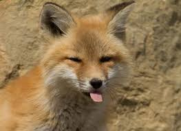

Thiên nhiên hoang dã có không ít loài thú mà chúng ta cần phải bảo vệ trước những nguy cơ tuyệt chủng của chúng. Và hôm nay chúng ta sẽ cùng nhau tìm hiểu về con cáo để biết được tên cáo tiếng anh là gì và môi trường sống cũng như số lượng cáo sinh tồn hiện nay như thế nào nhé.
Con cáo tên tiếng anh gọi là Fox, loài vậy này thuộc họ chó nhưng lại có kích thước khá nhỏ và mõm dài, mắt xếch, đuôi rậm và một cặp tai khá nhọn. Cáo phân bổ trên hầu hết các lục địa với rất nhiều loài.
Đặc trưng chung của cáo là chúng có hình dáng khá giống nhau và chỉ khác nhau một chút về màu lông hoặc một số chi tiết do ảnh hưởng của môi trường sống.
Đặc điểm nổi bật nhất của cáo để phân biệt với các loài khác cùng họ như chó, chó rừng và sói là cáo có thân hình khá nhỏ gọn, tai nhọn, mõm dài và đuôi rậm.
Một con cáo có cân nặng trung bình là 5,2-5,9kg và chúng có tuổi thọ trung bình là 10 năm hoặc cũng có thể hơn thế. Tuy nhiên phần lớn các loài cáo chỉ sống được từ 2-3 năm do chúng bị săn bắn khá nhiều.
Cáo thường sống đơn lẻ chứ không sống bầy đàn như chó sói hay một số loài cùng họ. Chúng sống đơn độc nên được xem là những kẻ kiếm ăn cơ hội, tuy nhiên đừng vì thế mà bạn xem thường khả năng săn mồi của cáo nhé.
Chúng có phản ứng nhanh nhạy và giết chết con mồi một cách khá nhanh gọn vì hầu hết những con mồi của sói có kích thước khá nhỏ nhắn.
